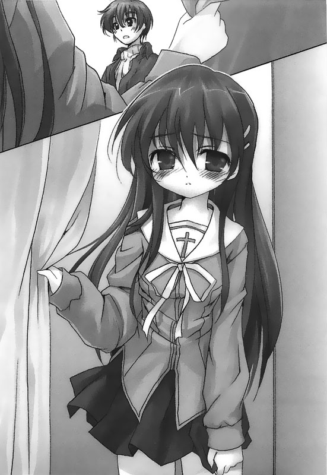
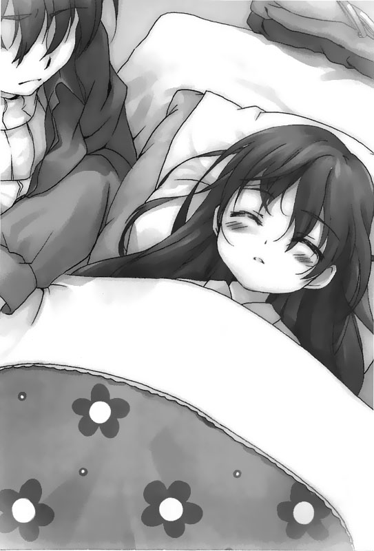

回到顶部

前往底部

09.葉月 (120円の春より)


「我喜欢看地图……」
我喜欢看着延伸到日本各个角落的国道Ⅰ号，让它带着闭上眼睛的我到达所有不知名的地方。
我也喜欢也许有一天能够载我到各地旅行的车子。
然而，不论我学习到了多少知识，那些旅行……终究只是空想。
就在我做着梦的时候，我的心，还有我对现实的体认都逐渐变得脆弱。我有泳装，有地图，但我没有未来。
宽广的世界仍存在于窗外，然而围绕在我身边的现实却不允许我触碰它。
只要哪天我闭上眼睛，我就可以离开这里，去一个什么也没有的世界。然而，这个世界本身还是会继续运转，不会因为我而消失。
……我知道。
我知道我的另一半得到另一个世界去找了。
……我知道。
但我仍却试着去想象，「如果我的结局不是如此」……这样的想象终究只能是一种空想，永远都不会实现……不论是比基尼泳装也好，如翡翠般翠绿的海也罢……
胸前那一道长长的伤疤告诉我，这样的期待不是我所能够拥有的……放弃吧。
我这辈子多数的时间都在医院里头度过。
我无法埋怨，亦无法祈求什么，始终只能在合上双眼的时间里头解放我的灵魂。
除了医院里的七楼病房和自己家里，没有其他去处的处境让我觉得悲哀。
我没有选择的权利，但我也没有自己想去的地方，这样的我岂不是太可怜了……
即使如此，虚度的光阴溜过，我也已经二十二岁了。
「就算一个也好……可以让我喜欢上些什么吗……」
就在我自言自语呢喃着的同时，仿佛觉得早已静止的时间出现了那么一点点松动的迹象。
这天，我原本封闭的心灵变得非常痛苦和煎熬……
——一月二十六日神奈川县——
银色的轿跑车闪亮亮的金属外壳辉映着天空，将冬季清澈的蔚蓝景色披在身上，我们驾着车行驶在公路上。
尽管这天依旧还是没有找出属于我们的目的地，然而，现在至少油钱和购买日用品的经费都不用愁了。我手里握着方向盘，身旁则坐着刚起床而显得一脸睡眼惺忪、正揉着眼皮的濑津美。
「嗯……」
「你醒啦？」
「……嗯。」
我将方才在自动贩卖机买的宝矿力递给她，然后将车子切进了快车道。
再开一会儿车子就会进入两条三线道交汇的十字路口。昨天我的提议虽然没有得到她的赞同，不过我仍旧将车子往西边开。我想我心里终究还是得要一个明确的目标。不管是什么都好。
然而，现在的问题是，我对路径一窍不通。而且若是走高速公路，身上的这些钱搞不好还是不够……就在我在脑中烦恼着这个问题的同时，两条三线道交汇的十字路口已经映入前方挡风玻璃之中。我想都没想，正打算直行的时候，濑津美开口说话了：
「……这里要左转。」
「咦？」
「左转啦……」
她忽然对我提出了方向上的指示。即便我狐疑地不知道她到底为什么要我这么做，但仍照着她的意思打了方向盘。
车子驶进了左转用的慢车道①，转进了一条同样宽敞的大马路。
①译注：日本的街道行车方向与台湾相反
「你怎么……为什么忽然要我左转？」
「……这条是国道Ⅰ号……接下来的一段路你直直开就好了」
「你……」
她突然冒出来的指示让我着实吓了一跳。
过去几天和她一起行动过来，她好像总是表现出一幅什么都知道的样子，然而，即便她很可能相当博学，不过这倒是她第一次自发性地对我下了指示。
「……你该不会也想去了吧？」
「…………」
「哦，那个我是说淡路岛啦。」
「……不行吗？」
「没有啦，我不是那个意思……」
我和她……一个希冀着某种明确的指引而不断地到处游荡，另一个却视线永远望向远方，脑子里在想什么旁人永远不得而知。我处在这样的她身边，实在很难料想到竟然有一天她会主动对我提出指示。
「……我没有期待什么。」
「咦？」
「我也不想要什么泳装……」
「你在说什么？」
「…………」
「……没有啦。」
——一月二十七日爱知县国道Ⅰ号——
冬季蔚蓝的天空下，银色的轿跑车反射着打在身上的阳光行驶在公路上。我们穿过了有许多陡坡和急转弯的箱根，现在路面摊成了直线，也没有那么多坡道，变得好走许多。
「喂，这里是哪里呀？」我对着濑津美问。
「现在在爱知县，再过不久就会开进名古屋了……」
因为考量到我们身上的现金有限，因此我们舍弃了方便快速的高速公路，改走一般道路②。而这样的选择若是由我自己一个人开，那肯定要去哪里都到不了，所以一路上都得听从于她的指示。这中间最令我感到不可思议的是，她对于道路分布位置的了解程度，竟比起卫星导航来的精确且详尽。我不知道她为什么会这么清楚，不过我想她所指出的方向都是正确的。
②译注：日本的国道Ⅰ号并非高速公路，而是一般道路。
「……下一个路口要转进22号道。」
「好。」
我听她的话打了方向盘。
我看了看窗外。这般热闹的都会是我生平第一次造访的地方。我开车穿过一条条街道，直指着北方。接着，不知不觉间，繁荣的都会景致逐渐变成闲适的田园风光。
「喂，我们在那边稍微停一下吧？」
车子走在国道上，我在路边看到一间家庭式餐厅，伸手指向它对着濑津美开口问道：
「不然我们这几天吃的都是便利商店的食物呢。」
「……嗯。」
想当然尔，我们也不是因为喜欢才挑便利商店的东西吃的。这是因为我们身上的现金不多，而且也没有心情去吃其他东西。
不过现在金钱方面有些余裕了，因此我便提出了这样的意见。
「怎么样？偶尔到家庭式餐厅吃个饭其实也不错吧？」
「……我吃便利商店的东西就好。」
她说完话，头也跟着垂下去了。她看着自己身上的衣服——唉呀，原来是这么回事。她现在身上还穿着松松垮垮的男性衣服呢……
「对哦，那我们先在那边停一会儿吧？」
「……那边？」
「那里呀，一间牛仔裤专卖店。」
那是一件常会在国道上出现的，专卖牛仔裤和休闲服饰的批发量贩店。
「我想这种店的衣服价钱一定不贵。」
「…………」
「那我们过去了？好吗？」
「…………」
她始终没有回话。不过她也没有表示出反对的意思。
……以她的思考习惯来看，我是不是可以把她没有提出反对意见的沉默视为某种程度的肯定呢……
我们走进了店里。
这间店一共有两层楼，楼层面积相当宽敞。濑津美进来以后便好奇地在好几个柜前来回逛来逛去。
事实上，这个时候的她表现出来的态度还是和平常一样一句话也不肯说，不过就算外表看起来没什么两样，但我想肯定不是如此。
现在的她，跟过去睁着一双无机质的眼眸、始终没有任何反应地看着无聊的电视节目的时候，肯定有着某些不同的地方。
她拿起了好几件衣服和裤子，看了看上面的标签，之后陷入了长考。接着每当她试穿一件衣服的时候都会跑过来给我看。
「……怎么样？」
「很好看呀。」
「…………不会很奇怪吗？」
「嗯，不会吧。」
同样的对话就在她每换一件衣服之后重复了好几次。而她尽管始终没有露出笑容，所有的心情全都不形于色，但依我看，现在她所表现出来的反应，肯定是很高兴的。
「怎么样？决定要买哪一件了吗？」
「……嗯，我要这两件。」
濑津美说完亮出了她最后给我看的一件可爱的衬衫，和一条短裙，这两件衣服怎么看都是国中生和高中生的品位。但我记得她好像年纪比我长上几岁……
然而，两件衣服穿到她身上，不仅没有一点违和感，而且还非常相称，可爱的模样不禁让人对她展露微笑。
「不过那件裙子还是不要吧？」
「咦？」
「啊——不是啦，我的意思不是不好看啦……」
「…………」
「我是怕你会冷啦，冬天嘛。」
「才、才不会呢……我不会怕冷的啦」
濑津美极力驳斥着我的意见。而这时候的她，那张白皙的脸庞似乎泛起了些许的红晕——这家伙明明怎么也不会表露自己内心的情绪，这会儿怎么……该不会害臊了吧？
这是我第一次看到濑津美有这样的反应。
「欢迎光临？」
就在我们走进门后，一名店员带着爽朗的笑声对我们打了招呼同时还带领我们到一张桌子前面……
在买完衣服之后，又沿着国道找了一间家庭式餐厅，提议要到这里用餐时，濑津美仍旧没有回话。不过我说完之后仍旧自顾自地将车子停到了店内。接着也没看她反对，等我下了车，只见她照样追下车来紧跟在我的身后——我想，她其实心里应该是觉得挺高兴的才对……
我说话的同时将餐厅的菜单递了出去。
这间餐厅不止提供常备性的午餐和一些随季节更换的套餐，还有自助式的饮料吧和沙拉吧台等等，品相相当齐全。
（话说，这类型的家庭式餐厅，不管到哪里大概都差不多吧。）
我边想边在心里决定了自己想吃的餐点。
「嗯……」
就在这个时候，我看到她看着菜单不知道在烦恼些什么。
「怎么了吗？你该不会找不到你想吃的东西吧？」
「……也不是啦……」
答了话之后，她开始专注地看着菜单思索起来。
不一会儿之后，她小小声地对着我问了一句：「……你不觉得太贵了吗？」
「嗯？你说这里的东西贵吗？」
「嗯。所以我们要不要到别的地方吃？」
尽管她这么说，不过就我的看法——不，其实就一般性的餐厅定价来说，这里的餐点价位应该还好才是，至少我不觉得它开价开得比其它餐厅高……然而，此时我看着她的脸庞，她脸上的表情有种令人难以形容的天真意味。
「嗳，怎么说呢……我也不是想都没想就进来的。外面的餐厅大概都是这个价位吧。我们就在这里吃吧？」
「……好啦。」
她似乎有点不满，皱着眉头又继续将视线移回到了菜单上。
（……是怎样？这家伙难道是个非常节俭的人吗？）
接着又看她烦恼了好一会儿之后，似乎终于决定了她想吃什么了。我看了之后正准备举手招呼服务生过来帮我们点餐。然而，这时候她忽然对我开口问了一句话：
「我问你哦，这个饮料吧是什么？」
「……啥？」
「可以点咖啡或红茶吗？」
「…………」
我看着她，从她脸上读不出一点点开玩笑的意思。继方才她对于这间餐厅的价位发表的意见之后，这会儿我又听到了一句不太像是她会问的问题。我刹时间不知道该怎么回答，不过到头来还是直接作出了解释……
「咦？喝几杯都可以吗？」
「嗯，不过也只有那边吧台上提供的饮料可以随便喝。」
「这样啊……好棒哦！」
我不过就是把饮料吧是怎么回事告诉她，结果她竟然露出了让我意想不到的惊讶反应。在我们点完菜之后，她很快就起身踏着愉悦而轻盈的步伐朝着饮料吧走去。
（……这家伙，该不会是第一次来到这种家庭式餐厅吃饭吧？）
我边想边坐在自己的位子上，仔细地观察着她的一举一动。而她则是站在饮料吧前面，又开始为了要喝什么而烦恼起来。
「——咦？」
就在这时候，我忽然察觉到了一个现象——店里的服务生还有客人们，有不少人都在注意着濑津美，视线不时往她身上飘去。另外和她擦身而过的人竟也都会忍不住回头再多看她一眼。
我想大家之所以会有这样的反应，绝不是因为很少人会像她一样站在饮料吧前面烦恼着该喝什么，而是因为她实在长得太漂亮、太可爱了，让人忍不住多看她一眼吧。
事实上，若是再仔细地看到距离她比较近的几张桌子上的客人们的反应，从他们的视线中也不难发现，他们之间的话题已经开始围绕着濑津美身上打转了。
——嗳，若是我不认识她的话，现在大概也会跟其他人一样，误以为是哪个偶像明星或模特儿来了吧……
话说，刚才帮她买的那一套可爱的衣服穿在她身上实在非常搭调好看，这点看在其他人眼里应该也会有同样的感想才对。
（说实话，这家伙若是扣掉那张老是显得不快乐的表情，还真找不出什么地方不配当少女偶像呢……）
我边想边望着她的身影。就在这时候，她忽然转过头来对我招起了手……
「怎么了吗？」
我跑过去站在她的身边，对着她开口问道……看来她拿起了一个红茶杯之后，就整个人不知所措地愣在那儿了。
「我问你哦，我真的可以在这边挑我喜欢喝的喝吗？」
「可以呀，饮料吧的东西本来就是你想喝什么就喝什么，想喝多少就喝多少的。」
「可是……人家从刚刚开始就被其他人盯着看耶……」
「……啊？」
「我在想，我是不是做了什么让大家觉得不高兴的事……」
我不知道该说她的回答让我觉得有趣还是让人觉得可爱。我笑了笑，然后告诉她别担心，这些东西是可以喝的。
接着我们坐回到位置上用餐，周围人们的视线仍时不时往我们这边飘来。每当濑津美一察觉到这些视线，她就会慌张地开口扒着我问一些奇怪的问题。比方说——
「刀子是用右手拿吗？」
「啊！该不会这种餐厅其实不可以请服务生来为我们倒水吧？」
……等等等等。听到这些问题，我大概可以猜到她大概是第一次来这种家庭式餐厅吃饭吧。而且，她似乎也完全没有察觉到自己的长相究竟多么迷人。
出了餐厅之后，我们又坐回到车上继续往目的地前去。银色的轿跑车在冬天深邃的天空下持续奔驰着。排气管恼人的杂音和清澈的蓝天形成强烈的对比。
「接下来转走国道21号……」
「好。」
我遵循着她的导航指示行驶着，不知不觉中已经来到了岐埠县。
过去她总在必要的时候才会回过头来，其他时候都是面向窗外，自顾自地远眺着他方。然而，现在却开始不时地透过车窗边的后照镜，望着镜中映出的自己露出高兴的表情。而这些动作似乎都是趁着我不注意的时候做的。
「…………」
「……怎么了吗？」
此时她留意到了我的视线而对着我开口问道。
「没有啦，我看你好像很喜欢刚才买的衣服嘛？」
「没、没有啊……没特别喜欢啦。」
说完，她便将视线从后照镜中移开，佯装出方才她的一切动作其实都只是个意外。
不过，一会儿之后，她趁着我转头望向别处时又开始注视起了后视镜——看来，她其实也有像女孩一样可爱的地方嘛……看到濑津美这样的一面，即使她平时都是那一副面无表情的模样，我却也觉得她真的相当可爱。
——一月二十七日晚间岐埠县郊外——
天已经黑了。我将车停到路边，两个人将椅背向后倒，又盖起了之前偷摸来的衣物充当棉被准备休息了
「我说呀，不知道医院那边怎么样了……」濑津美对着我开口问道。
距离我们离开医院已经好几天了。然而我们手上依旧还挂着医院为病患带上的手环。她问我话的时候，视线还没有转过来移到我身上，而是紧盯着自己手上写着血型和名字的白色手环发问的。
「你觉得我们溜出来会在医院里面引起很大的骚动吗？」我反问她。
「……有可能。」
「也是喔……」
不管父母亲也好，其他亲友也好，或者是医院里的医生和护士们也罢。就算只是表面上表现出来的态度，一想到他们会因为我们溜出来而担心得鸡飞狗跳，我心里也多多少少有些过意不去。
……抱歉，老爸；抱歉，关心我的大伙儿们，我竟然做了这么任性的行为……
「呐，这给你……你要用的话可以用。」
我边说边将在药袋里的手机掏出来交给濑津美。
这只手机被我关上电源，一直放在药袋里面。虽然我一点也没打算使用它，不过我还是将它带来了。
我打开手机，看到一整排的未接听来电对着濑津美说：
「你拿去打个电话给你家里的人吧。」
「…………」
她没有回话，不过我仍然将手机塞进了她的手中。
「至少让他们听听你的声音。我想他们一定很担心你的。」我说。
「……………………」
她不发一语地呆看了手上的手机好一会儿。然后对我开口问道：
「……按这个键对吗？」
「嗯，要先拨区码哦。」
「哦……」
——哗哗哗哗……
几声按键输入时发出的信号音连响过了之后，她缓缓将手机贴到了自己的耳边。坐在一旁的我也清楚地听见手机里头传来的答铃声。就在第四声铃响结束的同时——
「……您好，这里是佐仓家……」
电话那头发出来的声音从手机和她的耳朵中间溜了出来，小小声地传入了我的耳中。
「喂，请问您哪里找？」
「……………………」
「……喂？是濑津美吗？你到底——」
——啪嚓。
在她好好结束这通电话之前，她按下了按键，直接将电话给挂了。
「喂，你不说话好吗……」
「…………」
她没有回话。接着当她把手机交回到我的手上时，倒是对着我反问了一句：
「……你呢？你不跟你家里的人联络吗？」
「………………」
「我想你的家人和朋友一定也很担心你的。」
「……不用吧，我想我还是算了……」
我原本想说是不是打个电话给我妹妹好了，不过最后不知道究竟是基于什么样的念头，我终究还是否决掉了这样的想法。
其实我心里是有不想让大家担心的想法，和对大家感到抱歉的内疚感，不过除了这两种心情之外，另外也确实存在着某种其他的障碍。
我不知道这样的心情障碍究竟是以什么样的形式存在于我的脑中的，然而，我想除了现在坐在我身边的濑津美之外，跟我们一起住过医院七楼病房的病患或多或少可能都有同样的感受才对。
「我说你呀……」
面对我的沉默，濑津美隔了一会儿之后倒是稀奇地主动跟我说话：
「你呀……第一次听到自己会死的时候……你有哭吗？」
「…………」
死亡——这么一个词藻唐突地出现在我的耳边，让我一时之间感受到了不小的震撼。面对这个沉重的问题，我稍微思索了一会儿才说：
「……我想……应该是没有。」
「那你有埋怨为什么只有自己必须面对这样的命运吗？」
「这个……我不记得了。」
在一切事情发生的当下，我甚至无法将自己面临到的一切视作我必须面对的事实。我无法将眼前发生的事变成自己切身的体认。然而，也许这只是我的想法，而残酷的现实已经在我心里留下了阴影……
——一起在教练场上课的好友买了新车，来到我的病房前对我抱怨着他得背负三十六期的贷款，很辛苦……
其他朋友之中，有人已经决定要去哪里上班；有人确定留级；有人有了小孩；另外还有人被女朋友甩了。然而，不管他们后来的发展是好是坏，至少他们都有自己不同的人生。而我……我的未来却已经完完全全被斩断了……
从这个角度来看，也许我真有埋怨过，为什么只有我得面对这样的命运吧？
我曾告诉过自己这就是我的命了。但，就算我在理性上可以接受，情感上却无法认同。因此，也许我……真的还有对于正常人生的一丝丝眷恋吧。
「那你呢……你当时又是怎么想的？」
「……我吗？」
「嗯，你觉得自己很可悲而哭过，然后埋怨起这样的命运吗？」
「…………」
她沉默了一会儿。
「……我没有。」
「为什么？」我问。
「因为，我打从一开始就没有怀抱着希望……」
「没有怀抱着希望？」
「……嗯，因为我早已经放弃了。」
的确，如果一开始面对到这样的命运是就抛弃了希望，那么心理上也就不会再有任何痛苦；若是转过身不去看自己的未来，即使不会再有任何事情让自己觉得快乐，但也不会有任何事情再让自己觉得难过了。不过，面对这般消极的想法，我却不由得这么想——那不是太可悲了吗……
难道说，对濑津美而言，除此之外，她也别无选择了吗？
「我之前看过电影，电影里说，一匹狼最多也活不过三年。」
「狼？」
这时候，她忽然转开了话题，让我听不懂她想说什么。
「可是……驴子却可以活九年。」
「你想说什么？什么狼可以活三年，驴子可以活九年的……」
「……好像说，因为驴子有用，所以可以活得久一点。」
她说话时带着落寞的表情望向窗外。我想这是她为了说服自己，让自己放弃一切希望的借口吧。
——一月二十七日晚间佐仓家濑津美房间——
我今天也来到佐仓太太家叨扰。几天下来，阿东优和濑津美失踪的事件没有看到什么进展。我待在佐仓太太家里，在他们两人上班外出的时候替他们等电话，而他们也因此让我参观了濑津美的房间。
这是一件六叠榻榻米大的房间，里头放置着一张大床；房里头有一面大片的玻璃窗，让里头显得宽敞而明亮。这间房间整理得相当干净。不过这句话如果换个方式来说，就代表这里缺少真的有人生活过的气息。
濑津美，她的外表尽管看起来稚嫩，但实际年龄却和我相差无几。然而，这间房却怎么看也不像是那个年龄的女性会有的房间……我边想边浏览了床边书柜上的书目。
「这是……地图？」
令人感到不可思议的是，这只书柜上摆放的书目中没有漫画、小说之类的书籍，而是一本本的地图集，这些地图集的范围不只局限在全国地图或者我们居住的这个县市的地图，还有关东、关西、九州、北海道等等各个地区分门别类的详尽的地图集。除了地图之外，书架上还有濑津美每个月固定会购买的杂志、汽车报道。
「难道濑津美喜欢汽车？可是她的兴趣应该不在兜风呀……」
就我从佐仓太太那儿听来的讯息，濑津美应该还没有驾照。另外，也许这么说不是很恰当，不过我实在不认为她这种年纪的女生应该喜欢汽车报道还有地图。
（这些书目出现在书架上，究竟意味着什么呢？）
我边想边将视线移到窗边的花盆上。那一面采光良好的窗子面前种了几株盆栽，现在也开花了。
「是百合花吗？还有什么其他种类的花是白色的吗……」
其实我并不是很清楚那些花花草草的，不过我印象中曾经有看过这种花。因此它应该不是多么稀有的品种才对。
先不说这几株盆栽能不能断定濑津美拥有园艺方面的兴趣，不过若是跟方才的汽车报道和地图集摆在一起，我就真的很难理解它们两者之间的关系了。
濑津美真是个既美丽又不可思议的女孩呀……此时我身在她的房间，再加上之前见过她几次面时窥得的印象，让我不禁有这样的感想。
——嘟嘟嘟嘟嘟……
忽然间，一阵电话铃声响起，这并不是我的手机铃声，而是客厅里的电话声，我赶紧从濑津美的房间跑到客厅，就在我将手按在听筒上时，我的脑筋稍微转了一下……
——这通电话绝不是佐仓太太和她先生打来的。因为我已经跟他们说过几次，如果要找我就打我的手机，我想他们应该没有忘记这点才对。因此……搞不好这通电话的发话人，正是我所期待的对象也不一定。
我紧张地接起电话，「……您好，这里是佐仓家……」
「………………」
「喂，请问您哪里找？」
「………………」
我问了两句对方都没有回话。这让我此刻的心绪变得越来越紧张，我试图压抑住内心的悸动，果断地对着话筒出声唤道：
「……喂？是濑津美吗？你到底——」
——啪嚓，嘟……
在我开口把话说完之前，对方就先一步把电话给挂断了……我想——不，应该是百分之百可以肯定，拨电话过来的人就是濑津美没错了。
我赶紧试着回拨，不过对方似乎已经将电源切断，连接通都没接通。
濑津美没带自己的手机出门，因此她肯定是借了阿东优的手机来打的。
（……至少我现在可以确定，他们两个人目前是平安无事的。）
虽说光是这么一通无声电话就下这样的判断是有些鲁莽，不过目前也只能这么想了。
另外，虽然我不是很想这么做，不过我得跟阿东先生联络一下，跟他问问他儿子的手机号码，确认这通电话到底是不是用阿东优的手机拨过来的。
「可是……他们为什么现在会想到要打电话回来呢……」
我的脑中忽然浮现出这样一个疑问，然后径自陷入了沉思……
——他们两人一起溜出医院也都好几天了，而过程中一次都没有打电话回来过。然而他们身上带着手机，想打的话什么时候应该都可以打回来才对……虽然我在佐仓太太面前从没有说出来过，不过我原以为，他们可能不会再跟医院或者家里人联络，因此差不多已经放弃希望了。然而，从他们现在会想到要打电话的情况来看——
「……是不是，他们现在心理上的压力已经得到了抒解，因此有些许的余裕可以想到要联络了呢……再不然，会是他们遇到了绝境了吗？」
我现在并没有足以判断的依据，但我希望会是前者才好。
——不知道他们两人现在怎么样了……我站在看似不会再度响起的电话面前，心里带着这样的希冀期待着佐仓夫妇回家。
——一月二十八日岐埠县关原町——
我们现在在国道21号上，车窗外可以看见斑白点从天上飘下，而且越飘越多。
「怎么了吗？」濑津美问。
「嗯，下雪了。」
不知不觉之中，公路的两侧已经堆起了白雪。我不知道我们什么时候把车子开进积雪地区，然而现在看过去已经是整片白茫茫的景致了。
这下子不太妙呀。
刚才我确认过，这辆车用的轮胎不是雪胎。而且接下来的地区可能雪会下得更大，那就很麻烦了。
「喂，这一带雪下得很凶吗？」我对着濑津美问。
「咦？」
「没有啦，我是想说，如果雪还会下的更大的话那我们的车开起来可能会有点辛苦……」
虽说现在的路面上还没有积雪，不过若是在雪下得比较凶的地区，路面哪里冻住了其实也都没什么好惊讶的。这么一想，在雪地里开车，我在教练场上也只在教案上看过而已，也许还得想办法帮车子装上雪链呢……我边想边把车子停到路肩。
「……怎么了吗？」
「嗯，我看看行李箱里面有没有雪链。」
我答了话之后打开行李箱。然而，在我探头进去之后只从行李箱里头找到一颗备胎，还有一些工具，但没有找到我要找的东西。
（我想如果雪下得更大的话，雪链肯定是必要的吧……）
以我们现在身上的现金恐怕买不起雪胎，所以至少得去找间加油站买个雪链吧。然而……附近就连加油站也没有看到。
「喂，接下来会怎么样你知道吗？」
「接下来……是关原町。」
「这你刚刚已经说过了，我想问的是，接下来是不是很容易下大雪的地区？」
「这个……我不知道……」
她答话的语气中带有一股莫名的落寞。她的反应让我感觉到有些印象上的落差。毕竟她对各个地区的道路分布都知道的非常清楚，对这辆车的规格什么也几乎是了若指掌。然而相较于这个她更可能知道的事情，她却没有答案。
「好啦，那我们接下来就小心点开吧。」
「……嗯。」
我们又接着把车开了出去。
天色已经暗下来了。然而，飘雪的情况却似乎没有停歇的迹象。
……也许这么下去有点危险。
其实我们的车速并不快，不过我听到轮胎压在地上已经有一些喀哩喀哩的声音，再加上马上就要入夜了，整片路面迟早会冻起来的。因此，我想现在比较适切的做法应该是先找个地方停下来等隔天天亮了再说吧。
我在这样的想法中握紧方向盘，同时转头对她开口问道：
「我说，因为雪下得有点大，所以我想先往镇上开过去，怎么走好呢？」
「这样的话下一个十字路口要左转。」
「好。」
我应了一声，同时在路口处打过了方向盘。然而……
「……喂，这么走真的对吗？」
「咦？啊……嗯。」
「可是这边积雪积得很严重呀？」
而且，这条路的宽度不像是国道，一下子变窄了许多。
虽说这条路也是一条双线道，不过我想车子交会时，若是不让一下大概是无法过去的；再加上视线不良，放眼望去不但没有其他车辆行驶在这条山路上，甚至连一间民宅也看不到。
……我看这倒不是她指路的方向出了问题，而是方向对了，但在这种天候下不见得真的能够行驶。
其实在刚才那句问答之中我大概也渐渐明白了，她的知识可能并没有涵盖实际的应用层面，纯粹只是死的知识而已。
「唉、啊，糟糕——」
一个意外让我不禁扬声叫了出来——轮胎打滑的情况传到了方向盘上。我想就算我们车子现在用了雪胎，面对像这样的整条路上积雪的情况恐怕也没办法应付……
——铿！喀哩喀哩喀哩……
「咿呀！」
车尾的保险杆在路旁的护栏上稍微碰了那么一下。
「喂、喂！车子没事吧？」她急忙地问。
「嗯，像这样轻轻撞一下是没什么关系的啦。」
重点是，如果雪积得再厚些，车子不能开就麻烦了。
——路上下雪，这边既没有民宅又没有其他车辆经过，如果真不能动的话……我担心地想找个地方回转，然而车子开了一会儿却没有看到可以让我们回转的地方；就算有也都积雪积得严重，根本没办法让车子掉头。
皑皑的白雪持续飘落，似乎没有停歇的迹象，看起来地上的积雪会越积越厚。现在是一月，雪大概只有可能下得更大，却没有机会融化和消退。
眼下周围已经一片漆黑了。我仰赖着车头的大灯行进，小心翼翼地握紧了手中的方向盘。
「……对不起。」
濑津美坐在副驾驶座上露出一副不安的表情，忽然小小声地吐出这么一句话。
我原以为就算天塌下来这句话也不可能从她的口中听见，不过此时她心里搞不好也觉得她该为了这个结果负责吧。
「别在意啦，这不是你的错。」
我笑着要她不要担心——这样的说法有点逞强，不过我仍对着此时表现的有些反常的她这么安慰着。
然而……
（搞不好这条路在冬天根本是禁止通行的呢……）
即使我要她不用担心，不过心里则是渴望着能够早一点离开这条艰困的道路，而显得有些焦虑。
我们弯进了这条路已经开了半个小时了，却没有会过任何一辆车，甚至连一间民宅也没有看到。我刚刚看了看手机，虽说我大概早也已经猜到了，但手机上却毫不拐弯抹角地显示出这里收不到讯号。一想到可能会死在这种地方，我的掌心就不自觉地冒出了汗水。
接着我们又持续开了一会儿，终于在远处看见了一盏灯火。
「……有房子了。」
我的声音不自觉地发出颤抖。
一片漆黑的山野中不断地下着雪，一盏灯火出现在这画面中真的让我大大地松了一口气。
「我们终于可以不用再开这条山路了……」
「……嗯。」
不晓得是不是我多心，我看她此时脸上的表情也稍稍缓和了下来。
「我们绕过去看看吧。」
我在这句话中道出的不是一个提议，而是知会。毕竟这条山路再开下去不晓得还要开多久，再这么继续在黑暗中开下去，我觉得那绝不会是一个明智之举。
至少该跟他们借个一条雪链吧。住在这里的人家，我想他们应该会有的。另外，若是能拜托他们让我们在他们家里待到早上，那更是再好不过了……我打着这样的主意将车子开往那间亮着灯火的人家。
「晚安，打扰一下！」
来到这间沿着山路旁搭起的民宅，屋檐上早已经堆起了雪，我们将车停到屋檐下，然后下车到玄关前先试着敲了敲门。
这栋建筑看起来颇有古风，像是乡间田野中常可以看到的房子。从外观上来看似乎也已经有相当的年龄了。
「晚安，请问有人在吗？」
房子并没有门铃，因此我是轻轻敲着门对着门内问的。
就在我重复了几次同样的动作之后，眼前的木门终于缓缓向外推开了。
「呼～～今天很冷呢。」
门里头出现的是一位穿着塑胶长靴头上戴着一顶草帽的老太太。她带着和善而平缓的语气和独特的口音出了声。
「抱歉，我们的车子在这样的大雪中没办法继续开了……」
「哎呀呀，真是辛苦你们了，竟然在这么晚的天色下开在山里呀。」
「所以不好意思，我想跟您打个商量，不知道能不能跟您借个雪链？」
我边说边望了一下这户人家停在中庭的小型卡车——果然还是要有的……住在这样的山里，车子肯定是生活必备的工具，而且我猜这辆车碰到大雪时的对应装备应该也相当齐全才对。
（……我想他们应该有预备的雪链吧。）
我边想边等着老太太回话，就在这时候——
「嗳，先别说这个了，快点进来吧，我看你身子都冷了吧？」
「啊，那个……老太太，您等等——」
她并不打算听听看我想说什么，一股劲儿地就拉住了我的手往屋里头走，我看了看濑津美，她的手也被这位老太太拉着牵到了屋内。
「别客气了，我们刚好在准备晚餐呢。」
我们就这么跟着她进到了屋子里头。
我们被带到了客厅之中。这间客厅中央有一个地炉，地炉以外的地方则铺上了木板。地炉底下生着柴火，啪啪啪地燃烧着；周围的墙上挂了萝卜、干香菇，还有其他我不知道名字的蔬菜。我看着看着，觉得自己仿佛走进了一处电视里头常见的农人家里。
「你们待在外头一定冻坏了吧？别客气，就当成自己家里坐吧。」
是关西腔吗……我这么猜想，不过却又觉得有些不同。老太太说话的语调非常柔和，面带微笑地还为我们端上了茶水。
「谢谢，不好意思……」
我点点头，对着老太太道了谢。
坐在地炉前面可是我生平头一遭经历到的情况。暖和的程度远远超出了我的想象。
就在我正想喝一口茶而抬起头的时候，视线和坐在一旁的濑津美对上了
「………………」
「………………」
我们没有交谈，不过却仿佛可以心灵相通，知道对方想说些什么。
来到这里完全是误打误撞，不过我们也不是小孩子了，对于对方所释出来的善意和当下的气氛当然有一定的体认，更别说现在招待我们的是这么一位为人亲和的老太太了。我和她相互交换了一个苦笑，然后啜了一口热茶。
一口一口把茶喝完之后，我对着老奶奶缓缓开口问道：
「那个，老奶奶，不好意思，关于我刚刚跟您提到的雪链……」
「喔，你别担心，雪链你要几个有几个，有需要就带走吧。」
「这样啊，真是太谢谢您了。」
我答完话之后将空茶杯置到地上便起身站了起来。就在这时候，老奶奶对着我们开口问了：
「怎么了吗？你们急着赶路呀？」
「喔，不，那倒没有……」
「那就别急着走，今晚就留下来过夜吧？现在这个时间就连我们在住这里的人都怕危险而不太敢出门呢。」
「……………………」
「……………………」
我和濑津美在没有预期的情况下视线又彼此交会，透过两人的眼神来交换意见，至于主题则是老太太提议的「留下来过夜」。
其实就算有了雪链，我也没自信把车子开在晚上铺满雪的山路上。若是能在这里留到天亮，那当然是再理想不过了。因此，老奶奶的邀请对我来说实为不小的帮助——我试着用眼神让濑津美明白我这样的想法。
「……………………」
对此，她显得有些困扰的露出苦笑，不过我看她并非对于这样的方案特别反感，因此我便答应老奶奶的邀请了。
「谢谢您的邀请，不过我们真的可以待到早上再走吗？」
「可以可以，回来过年的孩子们刚走，现在这房子里就只剩下我一个老人家，你们不用介意啦。」
老奶奶带着平和的语气答应了，脸上的表情显得有些高兴。
这一切都在我们的意料之外，不过已经好几天没有在床垫上盖着棉被睡觉了……一想到这点其实我心里还觉得挺高兴的。
「那我先去准备晚餐，你们先洗个澡吧。」
老奶奶说完便朝着厨房走去。在她一句话引导之下，我便转头对着濑津美开口问道：
「怎么样？你要先去洗吗？」
「没关系，谁先都好……」
我和她，两个人这几天都待在车内，加上冬天也不太容易出汗。不过有这个机会，能泡澡当然是很令人高兴了。
「快点去吧，不然水都要凉了。」
老奶奶从厨房端了一个锅子，将它挂到了地炉上，然后将另一只手持着的浴巾和浴袍递了过来。
「来，这是给哥哥的，这是给妹妹的。」
「哥哥？」
「……妹妹？」
「你们家妹妹真是可爱，跟我们家孙女就是不一样，呵呵。」
老奶奶说完张口发出了爽朗的笑声。
这时候，我和濑津美做了第三次眼神沟通，这次的议题是关于所谓的兄妹。
「…………」
我想在这个情况下，与其积极地否定，倒不如就让这个话题就这么带过会比较好。因为若是要解释我们两人之间的关系，那就算是用尽千言万语恐怕也说不清——我将这样的意念灌输在我的眼神中试着让濑津美明白。
「……………………」
看来她确实感受到了我的想法，轻轻地点点头。
「老奶奶，这样的话就让她——我妹妹先去洗澡好了。」
「哦，这样啊？其实你们可以一起洗呀，我们家的浴室很大呢。」
「……………………」
……怎么办？关于这个新的议题，我试着再次使了眼色给濑津美。然而……
「……………………」
濑津美选择别过头，以非常有趣的反应回避掉了我的视线。这副模样看来真的有些滑稽可爱。
「奶奶……我先洗好了。」
「这样啊，难得有一间大浴室，不用很可惜呢。」
「那个……我哥他好像……没打算这么早去洗澡……」
面对老奶奶的劝说，濑津美结结巴巴终于还是把话给说清楚了。
站在一旁的我，对于此时她的反应和平时那般冷淡态度上的落差感到非常有趣，乐得处在一旁观看，然而最后还是忍不住调侃了她一句：
「喂，濑津美，你洗澡可别洗太久，让我没有热水洗哦！」
「我、我知道啦……」
她答话的同时恶狠狠地瞪了我一眼，而那张可人的五官摆出来的凶恶表情，散发出来的气势却显得格外惊人。
「老奶奶，感谢您的招待。」
「别这么说，不过是些粗茶淡饭而已。」
我们吃完了老奶奶亲手做的料理之后深深地呼了一口气。
话说，像这样有模有样的餐点已经很久没有尝到了。事实上，几天以来，扣掉今天晚餐和昨天中午在家庭式餐厅吃的那一顿之外，全都是在便利商店随便买东西吃。这种吃饭方式自从我住进医院以后就再也没有过了。
「我看你们今天也早点休息吧，都累了吧？」
老奶奶边收拾着餐具边对着我和濑津美说道。我看到她的动作，赶紧站起来要帮忙，然而，抢在我之前——
「我来帮忙收拾吧。」
濑津美已经先一步站起了身。
「没关系没关系，这点小事我自己来就好，你们不用麻烦。」
「可是……」
「别可是了，我看小妹妹你也累了吧？你看起来气色不太好呢，早点休息吧，明明是个漂亮的女孩子家，要好好爱惜身体，不要让憔悴的病容破坏了你的天生丽质喔。」
「………………」
老奶奶并没有恶意，不过一句话还是让濑津美垂下了头，而这时候得换我来说说话，让濑津美别在意自己没办法帮忙的事了。
「那就麻烦您了。我妹妹真的累了，那我们就先休息好了。」
「隔壁房间小，可能要委屈你们了。我已经铺好了床，你们好好休息吧。」
「谢谢，那我们先失陪了，晚安。」
我们对着老奶奶点点头，然后转身离开了客厅。
我们来到隔壁房间，这个有点狭窄的房间地板上已经铺好了三张床。
「话说，我们也好久没有睡在床上了呢。」我说。
「……嗯。」
我想都没想便倒在了床上，抓起被子一拉便盖到了头顶上。
打从我们从医院里的七楼病房中溜出来，已经过了整整一个礼拜。期间我们始终都是将车子里的座椅椅背倒下来就睡在车上，因此有铺好的被子可以睡，这种触感真的令我非常怀念。
「喂……」
忽然间，耳边传来濑津美的声音。
「怎么了吗？」
「……你不可以超过这条线哦……」
她说话的同时伸手指着我的垫被和她的垫被中间的交界处。这样的举动就好比小学时的男生女生之间常有的那种割分领地的举动。
「喂，这话是我要说的。你睡相差，好几次都翻过来睡在我的身上，我都还没说你咧。」
「……讨厌。」
她说完便径自翻过身去不再理我了。
我在想，此时她那张美丽的脸庞搞不好气的两个腮帮子涨得鼓鼓的呢。不过其实每当她有任何不同与往常那般冷淡的反应时，总会别过头去，让我无法窥见她脸上的表情。因此，说她脸上会有什么样的反应，终究也不过只是我自己胡乱猜测而已。不过，当我一想到她若是真的气到鼓起了一张脸，心里不知为何就觉得乐了起来。
「哎呀，你们还没睡呀？都累了一天了，不早点休息不好哦。」
此时老奶奶洗完了碗盘也进到了房间里来。她钻进了一旁的被窝之后对我们说：「那我老人家要关灯睡觉啰，晚安。」
「好的，奶奶晚安。」
一片漆黑的房间中，只有一盏小夜灯微微亮着。我在被窝中醒来，转头便看到濑津美躺在一旁酣睡的样子。
（……我看这家伙真的累了……再说，今天也发生了不少事呢。）
我边想边大大地伸了一个懒腰。光是这么一个小小的动作，平常在车子里头睡的时候可是何等的奢求呢。伸完懒腰之后，我转过头静静地注视着她。
我和濑津美之间只有短短数十公分的距离，近得甚至能感觉到她的呼吸。只要我稍微翻个身子，这近在咫尺的范围就可以让我压在她身上。这种危险的距离感让我不由得心跳加速。
平时我和她一起睡在车内的时候，鲜少意识到她身为异性的这个部分。毕竟一旦想到我们两人身为绝症患者的立场，不论什么样的激情都会瞬间被狠狠浇上一盆冷水。
我看着她那张美丽的脸庞。这张脸若是光看外表真是可爱到让人难以抗拒。加上今天几次发现到她令人意外的另一面，此时看着她没有任何防备的纯真睡脸，我的心脏便不争气地怦怦乱跳。
「呼噜……呜……拉面……」
……拉面？
「又是一句无厘头的梦呓呀……」
咻——
「呜哇！」
一阵掀被声中，她掀开盖在身上的棉被，左右开始乱翻乱滚了起来。
（天哪……真拿她没办法……）
我起身伸手抓回了被她掀开的被子，重新盖回到她身上。
……这家伙，不但爱说梦话，睡相也真是有够差劲的——话说，这模样跟她平时醒着的时候那种落差也未免太大了？
忽然间，我想起了初次和她在医院里头邂逅时的情景。当时的她口中还只有」没有啊」三个字呢。现在虽然也总是成天都带着一副茫然的眼神望着不知名的远方，让人不知道脑子里到底在想些什么。不过我想我渐渐地可以看到她心里不为人知的一面了。
关于她身上这个可能只有我才了解的性格面，让我不禁在心里为此感到高兴。然而……只要一想到接下来我们得面对什么样的未来和人生结局，一股忧愁也同时涌上了心头。
——一月二十九日早晨——
昨天的那场纷飞大雪，仿佛只是上天对人们开的一场玩笑。一大早，冬天澄澈的蔚蓝天幕便高挂在我们头顶。
「那你们小心一点哦，路上还有些积雪呢。」
「是，谢谢您的招待！」
此时停在老奶奶家庭前的银色轿跑车，INTEGRA已经装上了她送给我们的雪链，整装完毕准备随时可以动身了。
「那我们差不多该出发了。」
说完，我和濑津美一同扳开车门坐进了车厢内。就在这时候——
「唉呀，这个你们带着，我怕你们路上会肚子饿。」
老奶奶边说边递了一只塑料袋给我们。
「老奶奶……谢谢您。」濑津美深受感动地说。
「妹妹要跟哥哥好好相处哦。」
说完，我和濑津美一起对着车窗外的老奶奶挥手，然后引擎发动后，便再次开上了四处堆着白雪而显得色彩斑驳的山路。
银色的车子再次奔驰在山路上。
轮胎碾过结晶的霜雪发出喀啦喀啦的声音，我们踏过积雪的柏油路持续前进着。
开了没多久，我们就得把之前装好的雪链拆下来了——方才出发前老奶奶在教我们装上雪链的同时也告诉我们，若是车开进了市区或者高速公路，雪链就得拆下来然后再跑。
「我说呀……」
坐在副驾驶座上的濑津美忽然开了口。
「怎么了吗？」我回问了一句。
「……那个老奶奶呀，真是个好人呢。」她说。
「是啊，这个世上也是有像她这么好的人存在呢……」
我手里拿着老奶奶给的饭团，带着深刻的感触答了话。
老奶奶递给我们的塑料袋中装了她为我们两人包的饭团，还有昨晚吃剩的」筑前煮」③
③译注：筑前煮，一种以鸡肉或者猪肉搭配蔬菜，加上酱油、味精和糖炖煮而成的日式年菜。
虽然我们是无心的，不过直到最后分别的那一刻为止，老奶奶始终都以为我和濑津美是一对兄妹。然而，我想这样也好吧。而濑津美大概也会有同样的想法才对……我想着想着，对着坐在副驾驶座上的濑津美喊了一句。
「喂，濑津美，我说呀……」
「嗯？」
「什么『嗯』？你不是应该回答：什么事呀，哥——才对吗？」
「………………」
我当然不是认真地这么说的，纯粹只是开个玩笑而已。不过我因为想看看她听了会有什么反应，所以还是忍不住开了这样的玩笑。
她垂着头。我原以为她会就这么低着头持续好一会儿，结果没想到她很快就回应了。
「……猪头。」
短短地回了话之后，濑津美又撇过头将视线移向窗外。
我不知道此时此刻她的脸上究竟会写着什么样的表情，但我想应该不会跟以前一样茫然地望向远方。
——一月二十九日滋贺县琵琶湖湖畔——
我们将车停在琵琶湖边的潮线前面，下车眺望着整个湖面。凌冽的寒风夹带着雪花片片，在冰冷的湖水上染上了斑斓的白色。
湖上的浅波像海浪一样轻轻拍打在岸边。此时，濑津美迈开了脚步缓缓朝着湖中心走去。而这一幕，似乎几天前也发生过。
「你觉得怎么样？」她问。
「你是说，就这么走进湖里，是不是会死得比较轻松的这个问题吗？」
「嗯，我想应该会比死在海里面好些吧……」
「我不知道你这样的结论究竟是打哪儿来的。」
「因为……海水比较咸，身体也会浮起来嘛……」
「……这还真是了不起的推理呀。」
在冰冷的北风和不断飘落的细雪之中，我和她交换了这般不知道到底是玩笑还是认真的言词，而这时候，她一度缓下来的脚步此时又再次朝着湖心跨了出去。
「……你还是不打算阻止我吗？」她问。
「嗯，因为你没打算今天就结束自己的生命吧？」
「……嗯……也许吧。」
距离我们的目标——淡路岛，究竟还有多远呢……
对于那个地方，其实我们并没有特别的向往，或者有什么非它不可的执着。然而，对于没有任何目的地而到处游荡的我们来说，它却让我们这一趟旅程有了最起码的终点。
因此，我想即便我不阻止，濑津美的脚步大概也会在踩到湖水之前停下来吧……我的内心坚定地这么想着。
——一月二十九号滋贺县草津市——
「下一条岔路回到国道Ⅰ号。」
「好。」
在这个转弯处，我们的车子从国道8号驶回到了国道。我依着濑津美的导航指示即将开往滋贺县的草津市。
「我问你喔，现在我们身上的现金还够吗？」
「够吧，现在我们大概还有三万元左右吧。」
之前帮濑津美买了一套衣服，不过后来的餐费也都在便利商店里解决，因此没花到什么钱。
「怎么了吗？」我问。
「那我们要改走高速公路吗？」
「高速公路？走一般公路到不了吗？」
「是可以开到附近啦……不过最后还是要上需要付费的路线才到得了……」
「这样啊？也对，是要到淡路岛去嘛。」
我是不太清楚，不过去淡路岛好像要经过濑户……还是哪一座桥吧？总之不过桥没办法去。
「如果要走高速路的话，那我们就从草津先上外环道吧。」
「好。」
我依照她的指示从濑田东侧的交流道接上了名神高速公路。
这条高速公路比起我们过去行驶的一般道路相对来得平整很多，看得出来是有花功夫去维护的。一路上没有任何的交通标志，视线远阔的程度也让初次走上高速公路的我开起来非常顺手。但有时候我开在右侧的快车道时，后面却有高速行驶的车辆从我后方跟过来，然后超车，这点倒是让我觉得有点害怕。这是因为起初我们不懂右侧方向灯和闪大灯这两种车驾驶间的信号所代表的意义，弄懂了之后就觉得高速公路开起来真的很舒服。
「那辆车好炫呀……」
「……嗯。」
一辆车以非常快的速度超越我们，让车速保持的非常有限的我和濑津美彼此对望了一眼。此时她的反应和平常有些不同。
平常的她始终都是带着一副空洞的眼神望向窗外，不过上了高速以后却稀奇地开始对周围其他车辆东张西望……话说，她到底为什么会对汽车如此知之甚详呢？一想到这点，我便伸手指着方才高速超车的那辆车对着濑津美开口问道：
「喂喂，那是什么车呀？」
「…………」
「呦呦，你就当是猜谜游戏嘛。」
「……丰田Celica，Overview。」
「那现在超越我们的这辆呢？」
「CitroenXsara……」
「哇……你对车真的很清楚呢！」
说实话，她讲的到底对不对我也无从得知，可是因为她平时很少开口，看她答出一辆又一辆汽车的名字，看来很高兴的样子，于是我也一辆又一辆地接着问。
「蓝色的是Eunos，红色的是爱快罗密欧……」
接连两辆从我们车边超车开过去的车子，她也照样瞬间就答出了两辆车的名字。
「我看这辆车你就不知道了吧？」
我说着伸手指向一辆卡车对着她开口问道——由于她平时实在太少将情绪显露在脸上了，因而让我一时兴起想看看她困顿的表情。
「…………」
「哈，卡车你果然就不知道了吧？」
「……NISSAN……ATLUS10。」
「喂……天哪，你会不会太猛啦？」
我挑了卡车其实就是坏心眼地想要考倒她，不过没想到她连卡车都这么清楚。
「……你对这车清楚的程度应该可以拿出来炫耀了吧？」
「……是吗？」
「是啊，我觉得你可以嚣张一点没关系呢。」
「…………」
她没有回话。不过从她的反应来看，似乎是有点害羞的样子——虽然我还是不知道其中的原因为何，不过我想她肯定很喜欢车子吧。
「咦？可是……可是我没有驾照……」
「没关系啦！在海边开车一定很享受的！」
我想淡路岛那里又没人又空旷的地方要多少有多少吧？加上这辆车又是手排的，开习惯了应该会觉得很有趣才对。
「你不会开的话我可以教你哦。」
「………………」
「啊……话说，我也才刚学会开车就是了。」
「……嗯。」
这下对于前往淡路岛除了看花之外，没有特别想做的事情的我们来说，又找到了另一个新的目的了。
——一月二十九日名神高速公路大津休息站——
我们在高速公路上才稍微跑了一阵子，结果已经可以看到大津休息站了。
因为身体上的缘故，这趟旅程还要进行下去的大前提就是不能让自己累倒，因此我们便先绕进了休息站稍微停了一会儿。而这时候刚好有一辆旅游团的游览车也停了进来，整个休息站显得非常热闹。我和她下了车便开始在自动贩卖机区还有土特产区闲晃着。
「喂、喂，你们看那个女孩……」
看来游览车上载着的是修业旅行的学生。他们看到濑津美马上便七嘴八舌地聚集谈论了起来。其他休息站里头的服务生也不时将目光飘到我们身边。
（……嗳，这家伙可人的外表真是走到哪里都这么引人注目呢……）
当然，濑津美本人倒是始终没有这样的自觉。
「喂、喂……我的头发是不是睡塌了呀？」「我该不会把衬衫穿反了吧？」——每当她留意到周围的视线，总会问我这些有的没的问题。若要说会有这样的反应才像她嘛，那倒也是。
当我们买完东西准备回到车内的时候，她忽然驻足停了下来。
「怎么了吗？」
「………………」
她没有回话。然而视线却投射到这处几个正在打公共电话的人群身上。
「你该不会是想打电话跟家里人联络吧？」
「……之前我打电话回去的时候，是一个陌生人接的……」
「陌生人？在你家里接你们家的电话？」
她点点头，接着便跨步朝着公共电话处走去。
「喂，你要打可以用我的手机打呀？」
「不要啦，这样会害你缴很多电话费……」
她抓起一只听筒，投了铜板进去之后，慢慢地将自己家里的电话号码输入进去。
没过多久，我便听到她所使用的公共电话吃掉预放的铜钱的声音——喀噹——不过由于周围人多，今天我无法像上次一样坐在她身边一样，清楚地听到她和电话那头交换了什么样的对话。